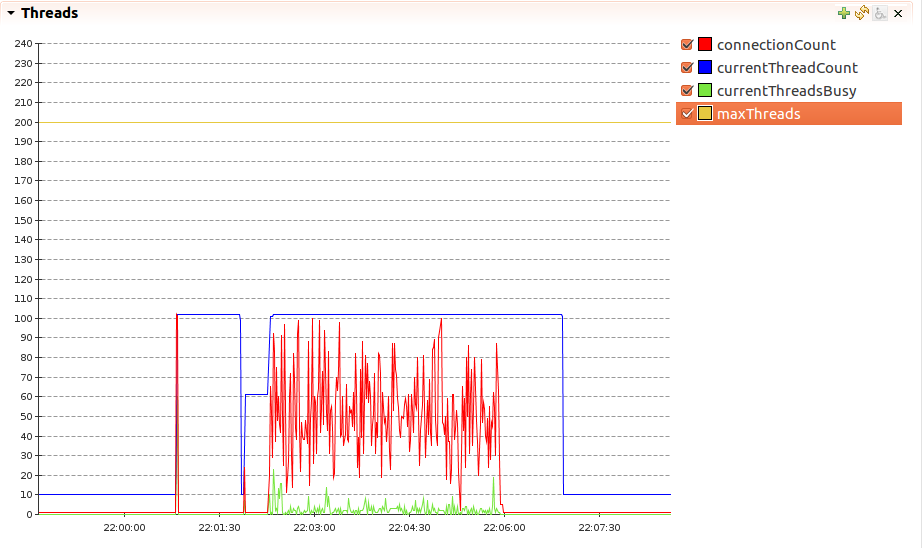
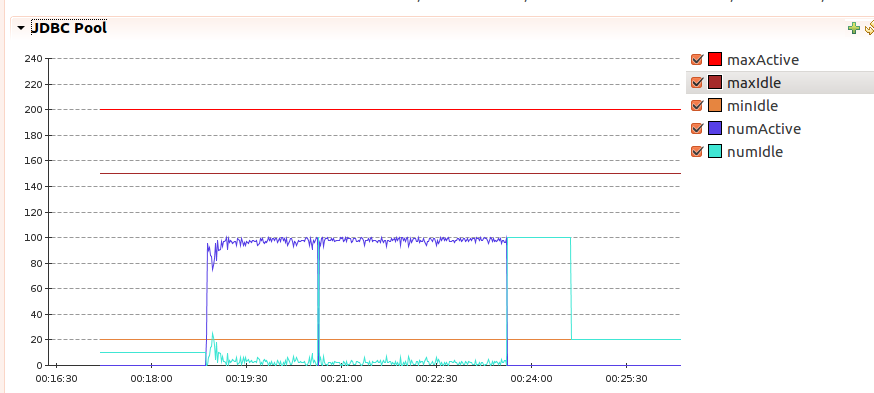
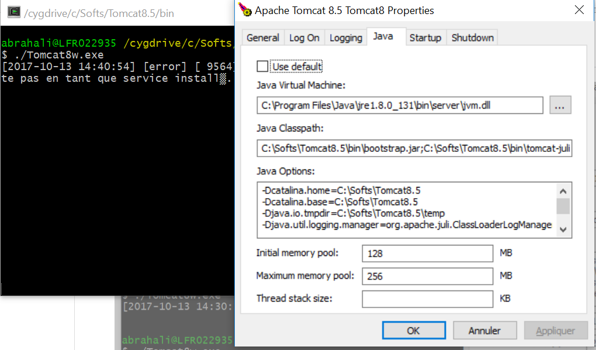

Table of content:
HowTo set up Tomcat 10: RUNNING.txt
CATALINA_HOME(required) : On Linux can be defined in .bash_profile
export CATALINA_HOME=/opt/tomcat-10
Apart from CATALINA_HOME and CATALINA_BASE, all this variables can be defined in the setenv script.
On *nix, $CATALINA_BASE/bin/setenv.sh:
JRE_HOME=/opt/jdk CATALINA_PID=$CATALINA_HOME/run/tomcat.pid
See linux-systemd.md
http://192.168.56.101:8080/manager/html
Official documentation here : manager-howto
<Valve className="org.apache.catalina.valves.RemoteAddrValve"
allow="^192.168.56.1$" />
Generate the encrypted password:
TOMCAT_HOME/bin/digest.sh -a sha-256 s3cr3t
s3cr3t:abb62be83c64497e48608ae0987da$1$918643e3a75d367b0ad45a34bd67..
Modify server.xml
<Realm className="org.apache.catalina.realm.UserDatabaseRealm" resourceName="UserDatabase">
<CredentialHandler className="org.apache.catalina.realm.MessageDigestCredentialHandler" algorithm="SHA-256"/>
</Realm>
Edit tomcat-users.xml
<role rolename="manager-gui"/>
<user username="admin123" password="abb62be83c64497e48608ae0987da$1$918643e3a75d367b0ad45a34bd67..." roles="manager-gui"/>
Restart Tomcat
A Realm is a “database” of usernames and passwords that identify valid users of a web application , and roles (similar to Unix groups) assigned to those users.
Differents implementations of realm can be used:
more informations about realms can be found here Tomcat Realm
Add to setenv.sh
CATALINA_OPTS="... -Djava.ext.dirs=jre/lib/ext -Djava.security.policy=jre/lib/security/java.policy"
Add this options to CATALINA_OPTS
-Djavax.net.ssl.trustStore=/path/truststore.jks
-Djavax.net.ssl.trustStorePassword=****
-Djavax.net.ssl.trustStoreType=JKS
Uncomment this in server.xml
<Connector port="8443" protocol="org.apache.coyote.http11.Http11NioProtocol"
maxThreads="150" SSLEnabled="true">
<UpgradeProtocol className="org.apache.coyote.http2.Http2Protocol" />
<SSLHostConfig>
<Certificate certificateKeystoreFile="conf/localhost-rsa.jks"
type="RSA" />
</SSLHostConfig>
</Connector>
Create a local KeyStore with server’s private key and self signed certificate:
keytool -genkey -alias myapp -keyalg RSA -keystore myapp-keystore.jks -keysize 2048 -validity 365
Enable Java(JSSE) Connector(APR is deprecated):
<Connector
protocol="org.apache.coyote.http11.Http11NioProtocol"
port="8443"
maxThreads="150"
SSLEnabled="true">
<SSLHostConfig>
<Certificate
certificateKeystoreFile="${user.home}/myapp-keystore.jks"
certificateKeystorePassword="changeit"
type="RSA"
/>
</SSLHostConfig>
</Connector>
https://192.168.56.101:8443/manager/html
Full Docs : https://tomcat.apache.org/tomcat-10.0-doc/ssl-howto.html
<Connector port="10080" protocol="HTTP/1.1"
connectionTimeout="20000"
redirectPort="8443"
address="safp0180"/>
- NIO Protocol : use JSSE format(keyStore)
<Connector
protocol="org.apache.coyote.http11.Http11NioProtocol"
port="8443" maxThreads="200"
scheme="https" secure="true" SSLEnabled="true"
keystoreFile="${catalina.base}/conf/ssl/server.jks" keystorePass="changeit"
clientAuth="false" sslProtocol="TLS"/>
- APR Protocol : use OpenSSL format. Best perfs. but ou must compile!. see below
<Connector
protocol="org.apache.coyote.http11.Http11AprProtocol"
port="8443" maxThreads="200"
scheme="https" secure="true" SSLEnabled="true"
SSLCertificateFile="${user.home}/conf/ssl/server-cert.pem"
SSLCertificateKeyFile="${user.home}/conf/ssl/server-key.pem"
SSLVerifyClient="optional" SSLProtocol="TLS"/>
<Connector port="10099" protocol="AJP/1.3" redirectPort="8443" address="safp0180" />
By default, HTTP connector in Tomcat6 and Tomcat7 is blocking connector(BIO). To serve 100 concurrent users,
it requires 100 actives threads(maxThreads if not set, is 200 by default). To use no blocking connector(NIO):
<Connector maxThreads="1000" port="8080"
protocol="org.apache.coyote.http11.Http11NioProtocol" .../>
From tomcat8, HTTP connector is NIO by default. wich uses a shared thread pool.
Install Package
apt install logrotate
Configuration: Create a file /etc/logrotate.d/tomcat with content:t
/opt/tomcat-10/logs/catalina.* {
daily
dateext
copytruncate
missingok
rotate 14
compress
}
copytruncate : truncate the original file after coping it. This allow rotating logs with Tomcat running.
missingok: Don’t issue a message error if log file is missing.
Cron daemon launch daily logrotate.
$ ls /etc/cron.daily/
logrotate `
Check Config
logrotate -d /etc/logrotate.d/tomcat
Run logrotate in verbose mode to Test or to Debug problems
/usr/sbin/logrotate -v /etc/logrotate.conff
JULI is the default logging librairy. JULI is an improved implementation of java.util.logging API. Because default implementation of java.logging API has many limitations, for example it is’nt possible to have a per-web application logging.
JULI is enabled by default. Logging can be configured:
A Valve element represents a component that will be inserted into the request processing pipeline for the associated Catalina container (Engine, Host, or Context).
https://tomcat.apache.org/tomcat-10.0-doc/config/valve.html
List of Valves. Examples:
Located in server.xml, it is used by the load balancer to enable session affinity. Il must be unique accros tomcat instances..
Add to server.xml
<GlobalNamingResources>
<Resource name="jdbc/myDS" auth="Container"
type="javax.sql.DataSource" driverClassName="oracle.jdbc.OracleDriver"
url="jdbc:oracle:thin:@127.0.0.1:1521:mysid"
username="scott" password="tiger" maxTotal="20" maxIdle="10" maxWaitMillis="-1"
removeAbandonedTimeout="180"
removeAbandoned="true"
logAbandoned="true"
testOnBorrow="true"
validationQuery="SELECT 1"
factory="org.apache.tomcat.jdbc.pool.DataSourceFactory"/>
Deprecated/New attributes
maxActive -> maxTotal
maxWait -> maxWaitMillis
Move from commons-dbcp to tomcat-jdbc-pool: resolve Already created exception
factory="org.apache.tomcat.jdbc.pool.DataSourceFactory"
add to server.xml ou in context.xml(deploy the DS on all applications)
<GlobalNamingResources>
<Resource
name="jdbc/mywikiDS"
auth="Container"
type="javax.sql.DataSource"
factory="org.apache.tomcat.jdbc.pool.DataSourceFactory"
initialSize="10"
maxActive="200"
maxIdle="150"
minIdle="20"
timeBetweenEvictionRunsMillis="34000"
minEvictableIdleTimeMillis="55000"
validationQuery="SELECT 1"
validationInterval="36000"
testOnBorrow="true"
removeAbandoned="true"
removeAbandonedTimeout="60"
logAbandoned="false"
username="mywiki" password="changeit"
driverClassName="com.mysql.jdbc.Driver"
url="jdbc:mysql://localhost:3306/mywikidb"
/>
<Host...>
<Context docBase="simple-jee" path="/simple-jee" reloadable="true">
<ResourceLink name="jdbc/mywikiDS" global="jdbc/mywikiDS"
type="javax.sql.DataSource"/>
</Context>
Preventing database connection pool leaks
removeAbandoned="true"
removeAbandonedTimeout="600"
logAbandoned="180"
removeAbandonedTimeout="600" :
en seconds. recyclage des connections. Si trop bas, risque de recycler une
connection encore active, car la lecture de ResultSet n'est pas prise en compte.
logAbandoned="true" :
Logging of abandoned connections, adds overhead for every connection borrowing,
because a stack trace has to be generated. The default value is false.
Postgres
<Resource name="jdbc/myDS" auth="Container" type="javax.sql.DataSource"
username="postgres"
password="postgres"
driverClassName="org.postgresql.Driver"
url="jdbc:postgresql://localhost:5432/yourDatabaseName"
maxTotal="25"
maxIdle="10"
validationQuery="select 1" />
MUST SEE : https://www.owasp.org/index.php/Securing_tomcat
this vulnerability may allow DDOS.
Test if renotiation is enabled
$ openssl s_client -connect localhost:443
[snip... a lot of openssl output]
---
HEAD / HTTP/1.0
R
RENEGOTIATING
28874:error:1409E0E5:SSL routines:SSL3_WRITE_BYTES:ssl handshake failure:s3_pkt.c:530:
Enter “HEAD / HTTP/1.0” newline and “R”. if response:
see : https://blog.ivanristic.com/2009/12/testing-for-ssl-renegotiation.html
To disable renogociation in NIO(style JSSE) protocle, modify connector in server.xml, allowUnsafeLegacyRenegotiation=false
Access to http://localhost:8080/notFound will show Tomcat Version (eg Apache Tomcat/8.0). To Eliminate it :
<Connector port="8080" protocol="HTTP/1.1"
...
server="dServer" />
backup lib/catalina.jar
jar xf catalina.jar org/apache/catalina/util/ServerInfo.properties
ou
zip -x catalina.jar org/apache/catalina/util/ServerInfo.properties
Replace
server.info=Apache Tomcat 8.0.x.x/x
server.number=8.0.1.2
By
server.info=
server.number=0.0.0.0
jar uf catalina.jar org/apache/catalina/util/ServerInfo.properties
ou
zip -u catalina.jar org/apache/catalina/util/ServerInfo.properties
rm org/apache/catalina/util/ServerInfo.properties
In web.xml, add error-page tag:
<error-page>
<error-code>500</error-code>
<location>/WEB-INF/jsp/common/error.jsp</location>
</error-page>
Generate encrypted password
./digest.sh -a sha-256 secret
./digest.sh -a md5 secret : for MD5
To use encrypted pasword in tomcat-users.xml, add digest to server.xml
<Realm className="org.apache.catalina.realm.UserDatabaseRealm"
resourceName="UserDatabase"
digest="sha-256" />
digest.sh cannot be used to encrypt passwords for DataSource resources
manager-gui is protected against CSRF but JMX interface is NOT.
Activate remote JMX
Edit bin/setenv.sh with:
export CATALINA_OPTS="-Dcom.sun.management.jmxremote \
-Dcom.sun.management.jmxremote.port=3333 \
-Dcom.sun.management.jmxremote.ssl=false \
-Dcom.sun.management.jmxremote.authenticate=true\
-Dcom.sun.management.jmxremote.password.file=../conf/jmxremote.password\
-Dcom.sun.management.jmxremote.access.file=../conf/jmxremote.access"
Create files :
$ echo "jmxuser readonly" >> jmxremote.access
$ echo "jmxuser passwd123" >> jmxremote.password
$ chmod go-rwx jmxremote.password
Or Without credentials:
-Dcom.sun.management.jmxremote
-Dcom.sun.management.jmxremote.port=6666
-Dcom.sun.management.jmxremote.ssl=false
-Dcom.sun.management.jmxremote.authenticate=false
Probem: JConsole, connection refused to 127.0.0.1
Solution: add also this option to the remote JVM, -Djava.rmi.server.hostname=hostIp
Simple load test simulation
ab -n 100000 -c 100 http://localhost:8080/
Prereq:
# cat tomcat-users.xml
<role rolename="manager-jmx"/>
<role rolename="manager-gui"/>
<user username="tomcat" password="changeit" roles="manager-gui,manager-jmx"/>
Heap Memory:
http://localhost:8080/manager/jmxproxy/?get=java.lang:type=Memory&att=HeapMemoryUsage
Query All :
http://localhost:8080/manager/jmxproxy/?qry=*:*
Datasource:
http://localhost:8080/manager/jmxproxy/?qry=Catalina:type=DataSource,host=localhost,context=/examples,
class=javax.sql.DataSource,name=%22jdbc/hellodb%22
ThreadPool(Not using Executor) :
Catalina:name=http-nio-8080,type=ThreadPool
Catalina:name=ajp-nio-8080,type=ThreadPool
attributs:
currentThreadsBusy
maxThreads
currentThreadCount
connectionCount"

Mbean name can be “http-bio-8080” on tomcat 6 & 7.
If using Executor:
JMX Bean: Catalina:type=Executor,name=[executor name]
Attributes: poolSize, activeCount
Recommandation : In Tomcat 7 you must use Executor.
JMX Bean: Catalina:type=DataSource,context=[context name],
host=[hostname],class=javax.sql.DataSource,name="[JNDI name]"
Attributes: numActive, numIdle

JMX Bean: Catalina:type=GlobalRequestProcessor,name="[depends]"
Attributes: bytesSent, bytesReceived, errorCount, maxTime, requestCount
Operations: resetCounters
JMX Bean: Catalina:type=Manager,context=[context name],host=[hostname]
Attributes: activeSessions, sessionCounter, expiredSessions
Windows service howto:
https://tomcat.apache.org/tomcat-8.0-doc/windows-service-howto.html
Tomcat Configuring GUI.
bin/Tomcat8w.exe //ES//service-name (Attention pas despace dans Tomcat 8)
